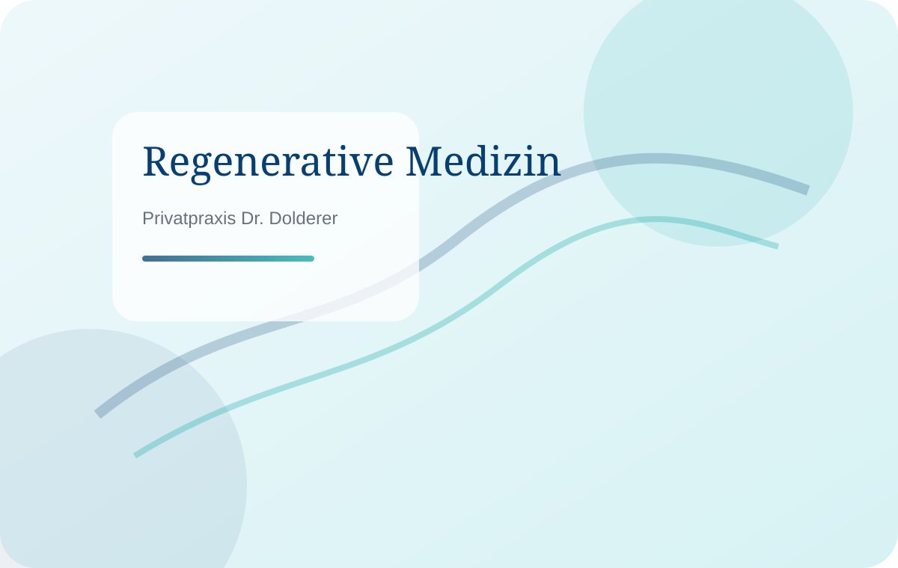
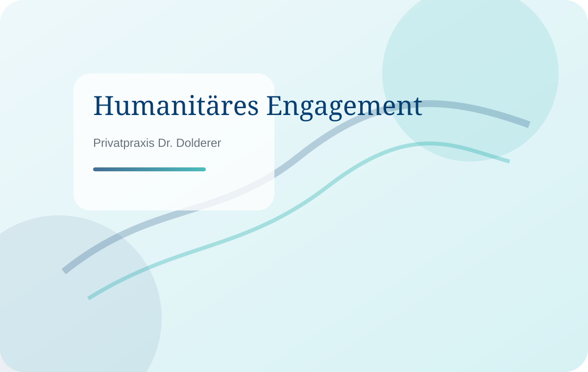

Regenerative Medizin · 12. Juni 2026
Regenerative Verfahren in der ästhetischen Medizin
Wie moderne Behandlungen körpereigene Regenerationsprozesse unterstützen können – seriös eingeordnet und ohne übertriebene Versprechen.
Mehr lesenAktuelles aus Praxis, Medizin und Engagement
Neuigkeiten erscheinen hier als einzelne Blöcke. Neue Beiträge können später einfach als weiterer <article class="news-card">-Block ergänzt werden.

Wie moderne Behandlungen körpereigene Regenerationsprozesse unterstützen können – seriös eingeordnet und ohne übertriebene Versprechen.
Mehr lesen
Eine gute Beratung klärt Wünsche, Grenzen, Alternativen und Nachsorge – und bildet die Grundlage für verantwortungsvolle Entscheidungen.
Mehr lesen
Humanitäre Projekte zeigen, wie chirurgische Erfahrung auch dort wirken kann, wo medizinische Versorgung besonders gebraucht wird.
Mehr lesenFür spätere News einfach einen bestehenden Block kopieren, Titel, Datum, Bild, Text und Link anpassen.